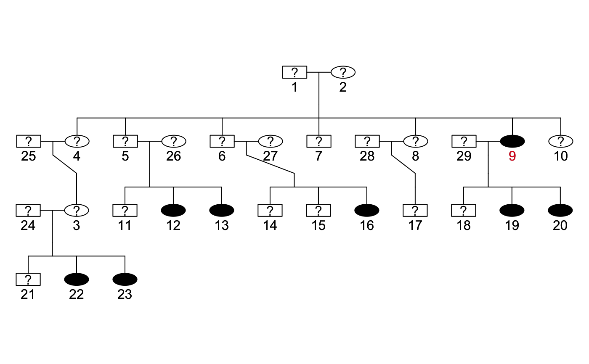
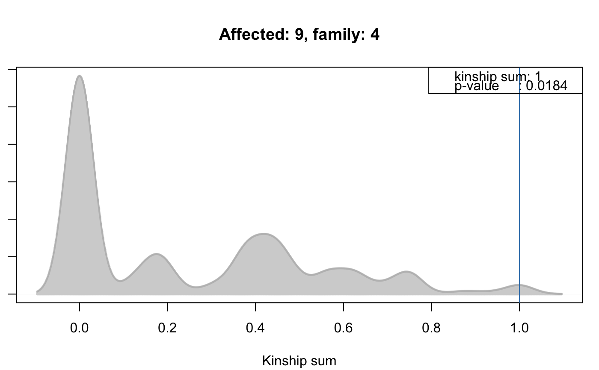

FAKinSumResults.RdThe FAKinSumResults object contains the results from a kinship
cluster test which evaluates familial aggregation based on the sum of kinship
values between affected cases. This test highlights individuals that
exhibit a higher than chance relationship to other affected
individuals, therefore highlighting individuals within families
aggregating the phenotype. To achieve this, for each affected
individual the sum of kinship values to all other affected cases is
computed. In a Monte Carlo simulation this is repeated with the same
number of cases and the resulting background distribution is used to
compute p-values for the kinship sums obtained from the observed
cases.
# S4 method for FAKinSumResults plotPed(object, id=NULL, family=NULL, filename=NULL, device="plot", only.phenotyped=FALSE, ...) # S4 method for FAKinSumResults plotRes(object, id=NULL, family=NULL, addLegend=TRUE, type="density", ...) # S4 method for FAKinSumResults result(object, method="BH") # S4 method for FAKinSumResults runSimulation(object, nsim=50000, strata=NULL, ...) # S4 method for FAKinSumResults trait(object) <- value
| addLegend | For |
|---|---|
| device | For |
| family | For |
| filename | For |
| id | For |
| method | The multiple hypothesis testing method. All methods supported by
|
| nsim | Number of simulations. |
| object | The |
| only.phenotyped | For |
| strata | For |
| type | For |
| value | For |
| ... | For |
FAKinSumResults objects are created by the
kinshipSumTest method on a
FAData object.
Class FAData directly.
Number of simulations.
The result of the simulation. This slot should not be accessed
directly, use the result method to extract result information.
Plots a pedigree for one of the affected individuals in the
simulation results. The id of the selected affected individual
(specified with argument id) is highlighted in red.
See plotPed for more details.
Plots the distribution of kinship sums between random sets of
samples individuals from the Monte Carlo simulation along with the
actually observed kinship sum for the affected individual
specified with parameter id. For id only affected
individuals for which the analysis has been performed are
allowed. The ids of these individuals are listed in column
"affected_id" of the data.frame returned by
result.
Returns the result from the simulation as a data.frame with
columns:
"trait_name": the name of the trait.
"total_phenotyped": total number of phenotyped individuals in
the trait.
"total_affected": total number of affected individuals in the
trait.
"affected_id": the id of the affected individual for whom
the test has been performed.
"family": the family id of the affected.
"kinship_sum": the sum of kinship values.
"freq": the expected frequency of the kinship sum from the
simulation.
"pvalue": the p-value for the significance of the kinship
sum.
"padj": the p-value adjusted for multiple hypothesis
testing (with the method specified with argument method). The returned data.frame is sorted by column
"pvalue", its row names correspond to column
"affected_id".
Performs the simulation analysis based on the pedigree and trait
information stored in the object. Returns a
FAKinSumResults object with the results of the simulation.
Set the trait information. This method will reset all simulation
results saved in the sim slot.
Calling the runSimulation method on a FAKinSumResults
object is the same as calling the kinshipSumTest on a
FAData object. In the first case the
simulation is performed using the trait information
data stored internally in the object, while in the latter case the
trait information have to be submitted to the function
call.
A call to the setter methods trait<- resets any simulation
results present in the sim slot, thus, the object can be
re-used to perform a simulation analysis using the new trait data.
The expected frequency (column "freq") in the result
data.frame is NA if the corresponding sum of kinship
coefficients reported in column "kinship_sum" was never sampled
in the simulation. Still, a p-value can be reported.
The plotPed function does not support to draw pedigrees for
individuals for which no simulation test has been performed. To draw a
pedigree for any individual (with or without trait information, being
affected or not in the trait) refer to the plotPed method for
FAData objects.
Subsetting (using the [ operator) is not supported.
Refer to the method and function description above for detailed information on the returned result object.
FAData,
kinship,
trait,
probabilityTest,
kinshipGroupTest,
kinshipSumTest,
genealogicalIndexTest,
familialIncidenceRateTest,
fsirTest,
plotPed
########################## ## ## Perform the simulation analysis ## ## Load the test data. data(minnbreast) ## Subset to some families and generate a pedigree data.frame. mbsub <- minnbreast[minnbreast$famid == 4 | minnbreast$famid == 5 | minnbreast$famid == 6 | minnbreast$famid == 7, ] PedDf <- mbsub[, c("famid", "id", "fatherid", "motherid", "sex")] colnames(PedDf) <- c("family", "id", "father", "mother", "sex") ## Generate the FAData. fad <- FAData(pedigree=PedDf)#>#>## Specify the trait. tcancer <- mbsub$cancer names(tcancer) <- mbsub$id ## Perform the test: far <- kinshipSumTest(fad, trait=tcancer, traitName="cancer", nsim=1000)#>#>#>#>#> trait_name total_phenotyped total_affected affected_id family affected #> 4 cancer 105 6 4 4 6 #> 11 cancer 105 6 11 4 6 #> 37 cancer 105 6 37 4 6 #> 54 cancer 105 6 54 5 6 #> 84 cancer 105 6 84 6 6 #> 122 cancer 105 6 122 7 6 #> kinship_sum freq pvalue padj #> 4 0.125 12.93333 0.3863333 1 #> 11 0.125 12.93333 0.3863333 1 #> 37 0.000 53.11667 1.0000000 1 #> 54 0.000 53.11667 1.0000000 1 #> 84 0.000 53.11667 1.0000000 1 #> 122 0.000 53.11667 1.0000000 1## Plot the pedigree for one of affected individuals. The id of the affected ## individual is highlighted in red. plotPed(far, id=result(far)$affected_id[1])#>#>## Replace the trait, this will delete all simulation results ## on the existing FAKinSumResults object tpreg <- mbsub$everpreg names(tpreg) <- mbsub$id trait(far) <- tpreg#>## The analysis can be performed using the runSimulation method. far <- runSimulation(far, nsim=1000)#>#>#>#>#> trait_name total_phenotyped total_affected affected_id family affected #> 9 NA 30 28 9 4 28 #> 19 NA 30 28 19 4 28 #> 20 NA 30 28 20 4 28 #> 12 NA 30 28 12 4 28 #> 13 NA 30 28 13 4 28 #> 22 NA 30 28 22 4 28 #> kinship_sum freq pvalue padj #> 9 1.00000 1.842857 0.01842857 0.5160 #> 19 0.75000 4.060714 0.06900000 0.6440 #> 20 0.75000 4.060714 0.06900000 0.6440 #> 12 0.62500 3.782143 0.12692857 0.7108 #> 13 0.62500 3.782143 0.12692857 0.7108 #> 22 0.46875 3.789286 0.22450000 0.8980## Plot the pedigree of one of the affected; note that "affected" now ## indicates whether the individual was ever pregnant. plotPed(far, id="9")#>#>#> Did not plot the following people: removeme1 removeme2